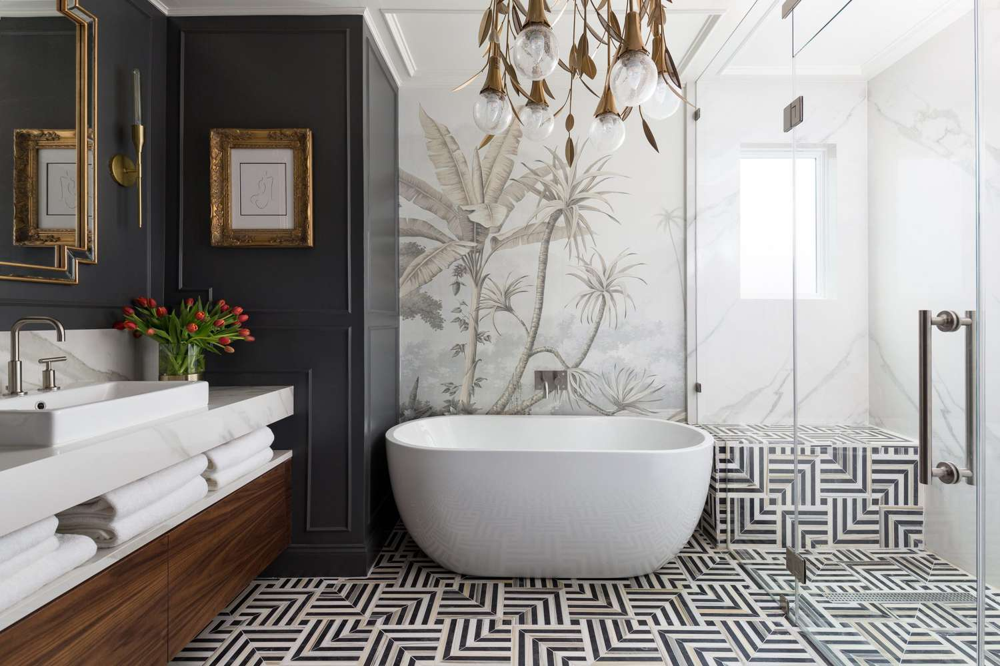
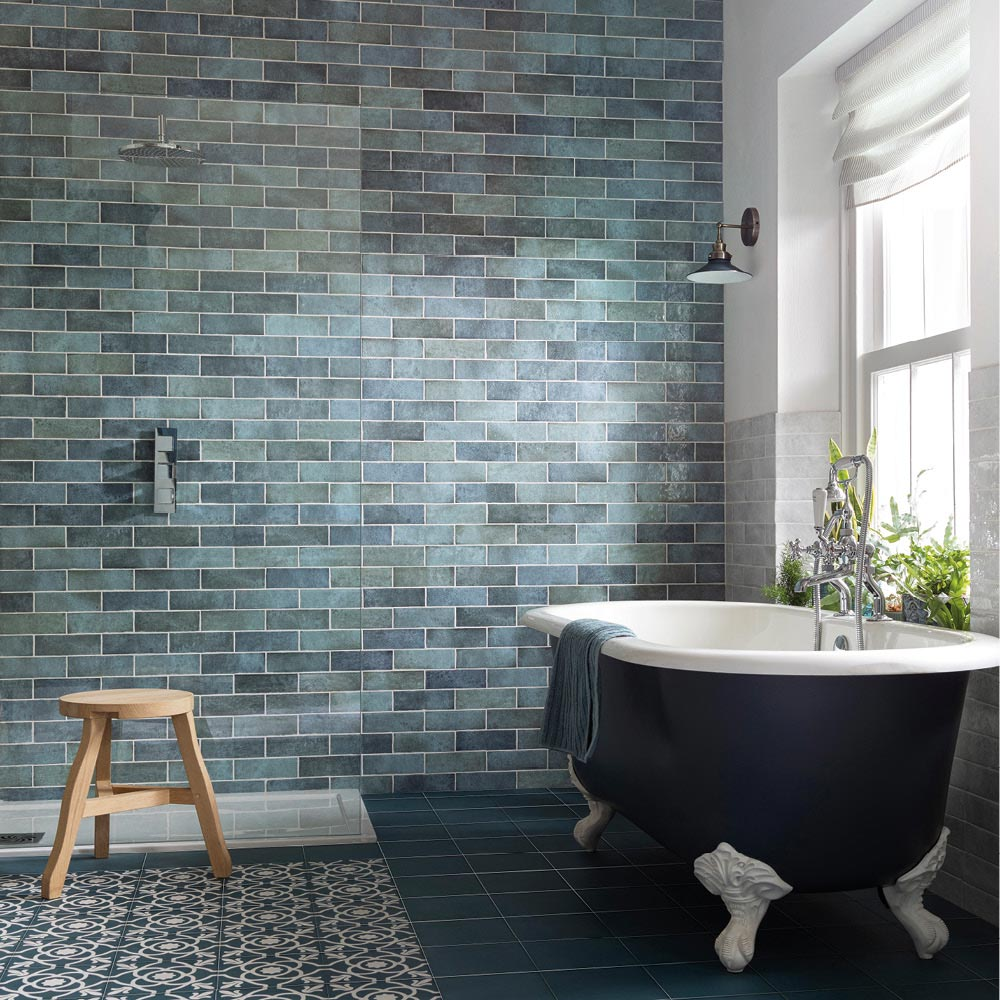
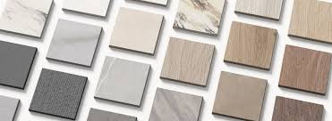
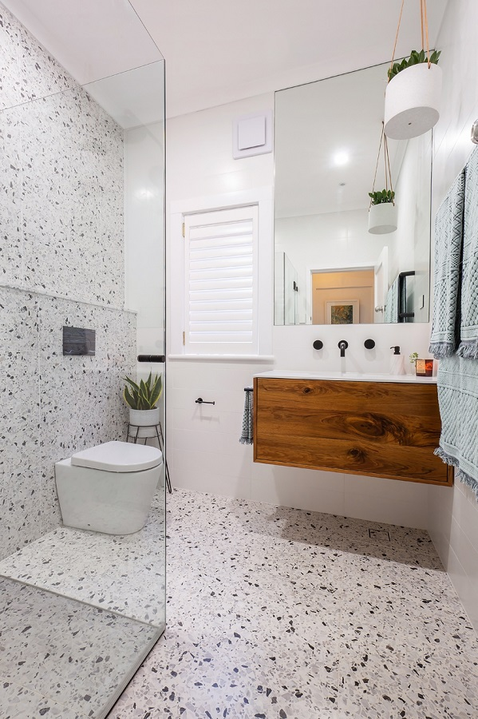

Kako odabrati savršene pločice za Vaš dom?
Odabir pločica za dom može biti izazovan zadatak zbog velikog izbora stilova, boja, veličina i materijala. Da biste pronašli pločice koje će savršeno odgovarati vašem prostoru, ključno je uzeti u obzir nekoliko važnih faktora:

1. Prilagodite pločice stilu vašeg doma
Prilikom odabira pločica, razmislite o ukupnom stilu interijera:
- Moderan izgled: Birajte pločice neutralnih boja poput sive, bijele ili bež, s minimalističkim uzorcima.
- Rustikalni stil: Prirodni materijali poput terakote ili pločice s imitacijom drveta idealan su izbor.
- Klasičan dizajn: Birajte pločice s bogatim uzorcima ili elegantnim detaljima poput mramornih motiva.
Veličina prostora ima značajan utjecaj na odabir veličine pločica:
- Mali prostori: Manje pločice ili mozaik mogu vizualno povećati prostor, ali velike pločice s minimalnim fugama također stvaraju dojam prostranosti.
- Veliki prostori: Velike pločice izgledaju elegantno i stvaraju dojam luksuza.
Savjet: Postavljanje pločica dijagonalno u manjim prostorima može dodatno vizualno proširiti prostor.


3. Boja i svjetlost
Boja pločica igra ključnu ulogu u estetici i atmosferi prostora:
- Svijetle boje: Idealne su za male i tamnije prostore jer reflektiraju svjetlost i čine prostor svjetlijim.
- Tamne boje: Daju dubinu i sofisticiranost, ali bolje funkcioniraju u prostranim i dobro osvijetljenim prostorima.
Razmotrite kombinacije boja koje će se uklopiti s ostatkom prostora, poput kuhinjskih ormarića ili boje zidova.
4. Funkcionalnost i materijal
Različiti prostori zahtijevaju različite vrste pločica:
- Kupaonica: Pločice otporne na vlagu i klizanje su ključne. Matirana završna obrada pruža sigurnost.
- Kuhinja: Birajte pločice koje se lako čiste, poput glaziranih keramičkih ili staklenih pločica.
- Hodnik: Tražite čvrste i otporne pločice koje mogu podnijeti veće opterećenje i habanje.

5. Zavšni savjeti za odabir
- Fuge: Birajte boje fuga koje se uklapaju s pločicama kako bi izgled bio skladan. Za moderniji izgled, fuga može biti kontrastna.
- Testirajte uzorke: Uvijek uzmite nekoliko uzoraka pločica i provjerite kako izgledaju u različitim uvjetima osvjetljenja.
- Održavanje: Ako ne želite često čisćenje, izbjegavajte pločice s neravnom površinom ili jako svijetle tonove.
Odabirom pravih pločica vaš prostor može postati funkcionalniji i estetski privlačniji. Uložite vrijeme u istraživanje i savjetovanje s profesionalcima kako biste pronašli idealnu kombinaciju stila, funkcionalnosti i dugotrajnosti.